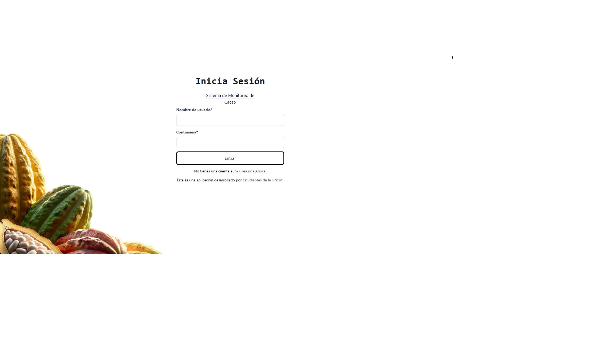
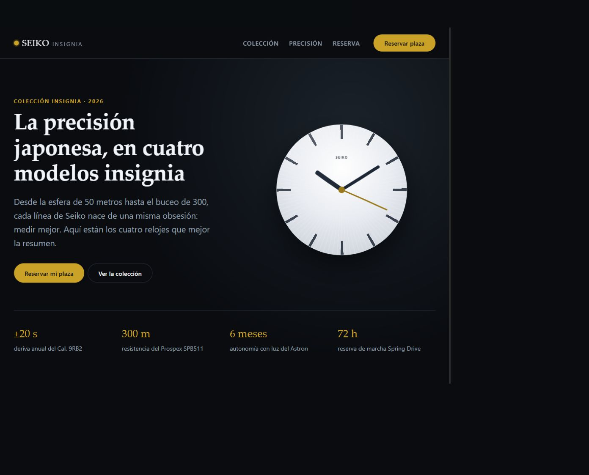

Desarrollo web
Práctica intermedia
- HTML5Intermedio
- CSS3Intermedio
- JavaScriptIntermedio
- Git & GitHubIntermedio
Ingeniería de Software · UNEMI
Soy Edgar Lara, estudiante de octavo semestre. Me interesa el análisis de datos y la inteligencia de negocios, y cómo convertir información en decisiones más claras.
01 / Sobre mí
Estudio Ingeniería de Software en la Universidad Estatal de Milagro. En mi formación he trabajado en interfaces web y en un prototipo académico para el monitoreo de cultivos de cacao.
Hoy quiero profundizar en análisis de datos e inteligencia de negocios: preparar información, encontrar patrones y presentarlos de forma comprensible. Me gusta aprender construyendo y explicar con claridad las decisiones detrás de cada proyecto.
FORMACIÓN
Ingeniería de SoftwareUniversidad Estatal de Milagro · 8.º semestre
02 / Habilidades
Presento mi nivel con honestidad: desarrollo web en nivel intermedio y una ruta activa de aprendizaje en tecnologías de datos.
Práctica intermedia
En aprendizaje y práctica
Tecnologías por reforzar
Python también fue utilizado en el prototipo académico CacaoDetect.
03 / Proyectos destacados
Dos trabajos académicos que muestran distintos lados de mi formación: un prototipo con enfoque agrícola y una landing page.

Prototipo web orientado a apoyar la identificación de mazorcas sanas y casos asociados a Monilia y Phytophthora.
Organizar la revisión visual de mazorcas y registrar los resultados de análisis.
Interfaz de monitoreo conectada a un modelo de visión por computadora YOLOv5.
La captura corresponde al acceso del sistema. La inferencia no está disponible en esta ejecución local porque el repositorio no incluye los pesos del modelo.

Landing page académica para presentar cuatro líneas de relojes, sus especificaciones y una propuesta visual inspirada en la relojería japonesa.
Presentar una colección de forma ordenada y adaptable a diferentes pantallas.
Composición responsive con HTML semántico, CSS propio y esferas dibujadas en CSS.
Los enlaces de navegación llevan a secciones. El formulario de reserva es demostrativo: no envía ni almacena datos.
El encargo de la asignatura solicita mínimo tres proyectos. Por ahora se presentan los dos proyectos disponibles; se puede añadir otro cuando Edgar elija uno más.
04 / Design System
Las muestras de esta guía utilizan las mismas variables y componentes que aparecen en el portafolio.
#176B62#B5D6CF#F4F7F5#FFFFFF#172522#63716EH1Software con enfoque en datos.
H2Aprender haciendo.
H3CacaoDetect
PárrafoInformación clara para apoyar mejores decisiones.
SecundarioOctavo semestre · Universidad Estatal de Milagro
EnlaceVer proyectos ↗
--space-1 · 0.5rem--space-2 · 1rem--space-3 · 1.5rem--space-4 · 2rem--space-5 · 3rem05 / Contacto
Estoy construyendo mi camino en análisis de datos e inteligencia de negocios. Puedes conocer más de mis proyectos en GitHub.
PERFIL PÚBLICOgithub.com/elaray2No incluyo teléfono ni correo personal en esta versión pública.